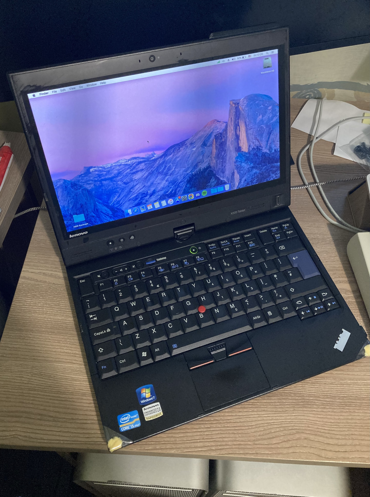
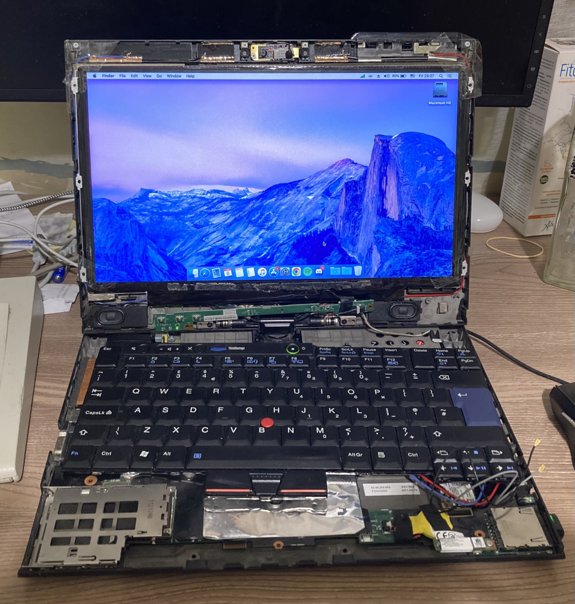
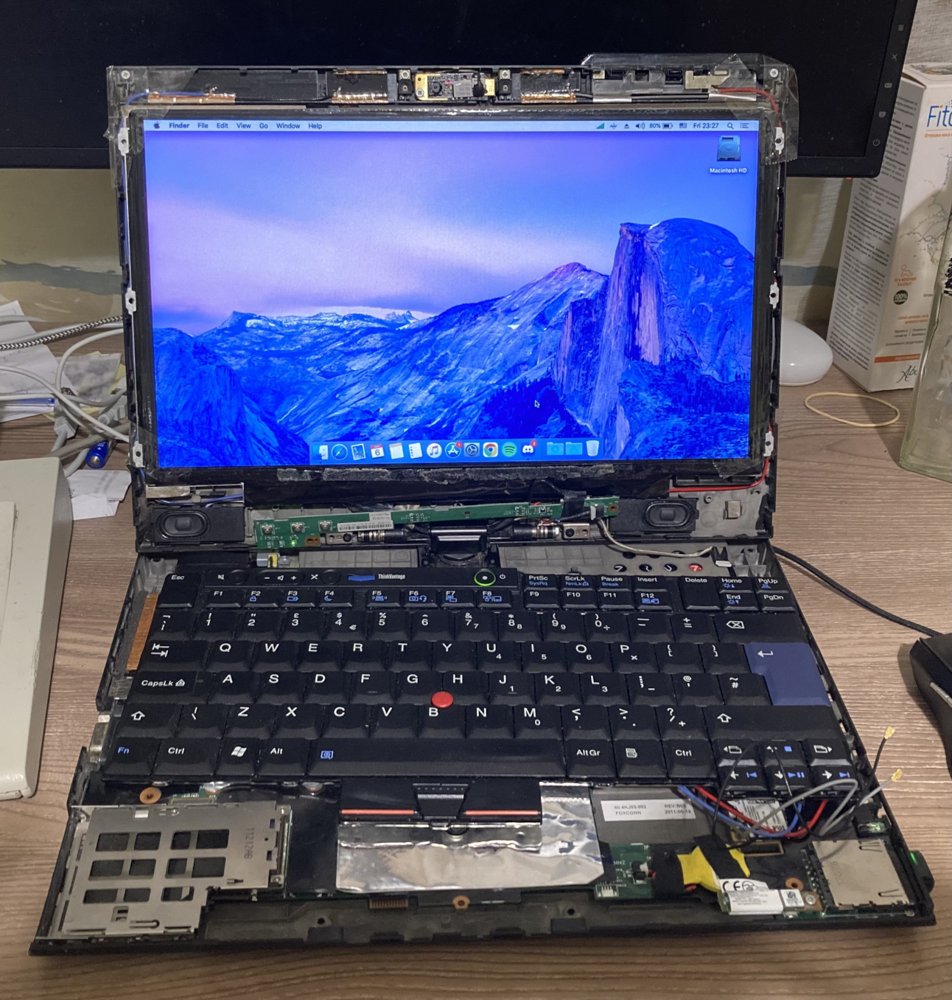

|  | CPU: 2.5 GHz Intel Core i5-2520MMemory: 8 GBStorage: 480 GB SSDGPU: Intel Integrated HD Graphics 3000OS: Arch Linux Keyboard Layout: Greek ANSI
|
Has minimal cosmetic damage. I used this machine as my main portable for a while.
Currently running Mac OS High Sierra, I am typing on it right now.
Update - I decided to replace the display because it started showing a huge white vertical line on the screen which is a very common issue with these. Turns out, on the Outdoor model (that doesn't have touch input) the screen is glued and basically fused with the front frame so trying to remove it is almost impossible without breaking it. Well... I broke it and although I replaced the screen, the new LCD was completely exposed because I couldn't reuse the front frame/cover. I patiently waited for another X220T to pop up for cheap, or at least a display assembly and after several months it finally happened! I replaced the whole assembly and now it works perfectly! The new one isn't the Outdoor model and has Pen and Touch input so I got a touchscreen as a bonus! Mac OS does not support the touchscreen by default and I couldn't get it to work at all, even with third party software so I decided to install Linux on it (of course). I first went with Gentoo and everything went smoothly but I decided it wasn't the distro for me because it took too much time to compile packages. After that I gave Arch Linux a try and despite the memes, I gotta admit it's really nice to use. It also has a lot of packages in the AUR. I'll probably stick with it since it supports the X220T perfectly.
Update 11/01/2024 - I bought a drive caddy for really cheap because mine was missing it.
Update 06/01/2025 - Added a 3G module
Update 14/03/2025 - Original keyboard broke (flex cable ripped when I was taking it apart) so I went on a hunt to find a new keyboard. Went through 3 until I finally found an original one with an ANSI Greek layout.
 



{kind=link}